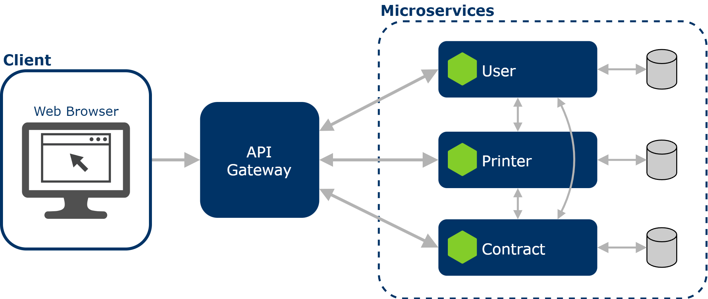

Arquitetura
1. Introdução
O objetivo deste documento é fornecer uma visão clara e compreensiva da estrutura e dos componentes do sistema, incluindo suas interações e dependências, bem como as decisões de design que orientaram sua criação.
2. Representação Arquitetural
2.1. Componentes
Microsserviços
A arquitetura de microsserviços é uma abordagem onde o sistema é dividido em pequenos serviços independentes, cada um responsável por uma tarefa específica. Esses serviços são desenvolvidos, implantados e escalados de forma independente, o que aumenta a flexibilidade, a capacidade de resposta às mudanças e a escalabilidade do sistema. Cada microsserviço possui seu próprio banco de dados e se comunica com outros serviços através de APIs RESTful.
O sistema possui os seguintes microsserviços:
- Printer: Responsável por gerenciar as impressoras e padrões de impressoras. Monitora a quantidade de impressões dos equipamentos cadastrados via SNMP e gera relatórios com os dados coletados.
- Contract: Armazena dados dos contratos de aluguel de equipamentos.
- User: Armazena dados de usuários e gerencia tokens de autenticação.
Os microsserviços podem comunicar entre si usando suas interfaces HTTP.
Interface de Usuário
A interface de usuário para o sistema será uma interface web, acessível através de navegadores modernos. A escolha de uma interface web traz vários benefícios, incluindo acessibilidade, facilidade de distribuição e compatibilidade com diversos dispositivos.
API Gateway
O API Gateway é um componente crucial na arquitetura de microsserviços, atuando como um ponto de entrada único para todas as chamadas de API feitas aos diversos microsserviços. O API Gateway recebe todas as requisições de clientes e as roteia para o microsserviço apropriado utilizando regras de roteamento configuradas para determinar para qual serviço a requisição deve ser encaminhada.
2.2. Diagrama de Arquitetura
O diagrama de arquitetura apresentado a seguir ilustra a estrutura do sistema:

2.3. Tecnologias
React
ReactJS é uma biblioteca JavaScript amplamente utilizada para criar interfaces de usuário interativas em aplicações web e móveis. Ele simplifica o desenvolvimento ao dividir a interface em componentes reutilizáveis e oferece uma maneira eficiente de atualizar e renderizar elementos na tela, proporcionando uma experiência de usuário fluida e responsiva. O React é utilizado no front-end do projeto.
NodeJS
Node.js é uma plataforma de backend baseada em JavaScript, ideal para construir serviços eficientes e escaláveis. Ele permite operações assíncronas e não bloqueantes, facilitando a construção de APIs RESTful e integração com bancos de dados, adequando-se bem à arquitetura de microsserviços moderna. No projeto utilizamos o Node com Typescript nos microsserviços e no API Gateway.
PostgreSQL e Prisma
PostgreSQL é um sistema de banco de dados relacional de código aberto conhecido por sua confiabilidade e robustez. Ele suporta consultas complexas, transações seguras e oferece recursos avançados como indexação eficiente e suporte a tipos de dados variados. É amplamente utilizado em aplicações que requerem armazenamento estruturado e confiável de dados.
Prisma é uma ferramenta de ORM (Object-Relational Mapping) que facilita a interação entre a aplicação e o banco de dados. Com Prisma, é possível realizar consultas, atualizações, e outras operações de banco de dados sem que seja necessário escrever nada em SQL.
3. Visão de dados
Modelo Entidade-Relacionamento (MER)
Um Modelo Entidade-Relacionamento (MER) é uma representação que descreve a estrutura de um banco de dados. Ele utiliza três componentes principais: entidades, que representam objetos ou conceitos; atributos, que são as propriedades dessas entidades; e relacionamentos, que mostram como as entidades estão associadas entre si. O MER facilita a compreensão e o planejamento do banco de dados antes de sua implementação, garantindo que todas as necessidades de dados e suas interações sejam consideradas.
Em uma arquitetura de microsserviços, cada serviço possui seu próprio banco de dados, mas pode referenciar dados de outros serviços usando IDs ou chaves simbólicas, garantindo a independência e a comunicação via APIs.
Diagrama Lógico de Dados (DLD)
O Diagrama Lógico de Dados (DLD) é uma representação gráfica detalhada que descreve a estrutura de um banco de dados em termos de tabelas e suas relações. Ele é uma evolução do Modelo Entidade-Relacionamento (MER) e visa fornecer uma visão mais específica e técnica da organização dos dados, facilitando a implementação no banco de dados físico.
3.1. Printer Service
MER
Entidades:
- RELATORIO
- RELATORIO_LOCADORA
- ROTINA_SNMP
- IMPRESSORA
- PADRAO
Atributos:
-
RELATORIO
- id
- impressoraId
- contadorPB
- contadorPBDiff
- contadorCor
- contadorCorDiff
- ultimoResultado
- resultadoAtual
- ultimaAtualizacao
-
RELATORIO_LOCADORA
- id
- impressoraId
- contadorPB
- contadorCor
- contadorTotal
-
ROTINA_SNMP
- id
- localizacao
- dataCriado
- dataUltimoUpdate
- cronExpression
- ativo
- cidadeTodas
- regionalTodas
- unidadeTodas
-
IMPRESSORA
- id
- numContrato
- numSerie
- enderecoIp
- estaNaRede
- dataInstalacao
- dataRetirada
- ativo
- contadorInstalacaoPB
- contadorInstalacaoCor
- contadorAtualPB
- contadorAtualCor
- contadorRetiradaPB
- contadorRetiradaCor
- localizacao
- padraoId
-
PADRAO
- id
- nome
- modelo
- colorido
- oidModelo
- oidNumeroSerie
- oidFirmware
- oidTempoAtivo
- oidDigitalizacoes
- oidCopiasPB
- oidCopiasCor
- oidTotalGeral
- ativo
Relacionamentos:
-
RELATORIO pertence a uma IMPRESSORA
- Um relatório pertence a apenas uma impressora, mas uma impressora pode ter vários relatórios.
- Cardinalidade 1:n
-
RELATORIO_LOCADORA pertence a uma IMPRESSORA
- Um relatório de locadora pertence a apenas uma impressora, mas uma impressora pode ter vários relatórios de locadora.
- Cardinalidade 1:n
-
IMPRESSORA pertence a um PADRAO
- Uma impressora pertence a apenas um padrão, mas um único padrão pode ter várias impressoras.
- Cardinalidade 1:n
DLD
3.2. Contract Service
MER
Entidades:
- CONTRATO
Atributos:
- CONTRATO
- id
- numero
- nomeGestor
- descricao
- dataInicio
- dataTermino
- ativo
- createdAt
- updatedAt
DLD

4. Pacotes
Um diagrama de pacotes é uma ferramenta visual usada na engenharia de software para representar a organização de um sistema em termos de módulos e suas interações. Ele agrupa componentes relacionados, como classes e interfaces, dentro de "pacotes", ajudando a estruturar o sistema de forma mais clara e organizada.
Esses diagramas são úteis para identificar e analisar as dependências entre diferentes partes do sistema, promovendo um design mais coeso e menos acoplado. Além disso, eles facilitam a comunicação entre os membros da equipe de desenvolvimento, fornecendo uma visão clara da arquitetura do sistema.
4.1. Diagrama de Pacotes
Front-end

Back-end - Microsserviço
5. Referências Bibliográficas
About PostgreSQL. Disponível em: https://www.postgresql.org/about/
What is Node.js. Disponível em: https://developer.oracle.com/learn/technical-articles/what-is-node-js
React. Disponível em: https://react.dev/
IBM - O que são microsserviços? Disponível em https://www.ibm.com/br-pt/topics/microservices
Diagrama de Pacotes: Definição, Componentes e Exemplos. Disponível em: https://gitmind.com/pt/diagrama-de-pacotes.html
6. Versionamento
| Data | Descrição | Autor(es) |
|---|---|---|
| 14/07/2024 | Criação do Documento | Lucas Braun |
| 22/07/2024 | Corrige diagrama e serviços | Lucas Braun |
| 26/07/2024 | Adiciona DLD's | Lucas Braun |
| 28/07/2024 | Adiciona diagramas de pacotes | Lucas Braun |
| 10/08/2024 | Altera diagrama e melhora descrição dos serviços e tecnologias | Lucas Braun |
| 12/09/2024 | Adiciona novas tabelas do Printer | Lucas Braun |